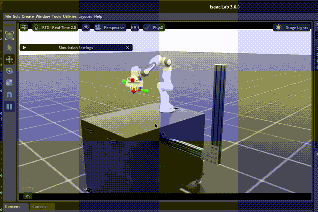

Policy Training#
This workflow covers training an RL policy from scratch using RSL-RL’s PPO implementation. The training is fully parallelized across hundreds of environments for sample-efficient learning.
Docker Container: Base (see Docker Containers for more details)
./docker/run_docker.sh
Training Overview#
We use Proximal Policy Optimization (PPO) from the RSL-RL library, a proven on-policy RL algorithm for robot learning. The training process:
Parallel Simulation: Runs 512 parallel environments simultaneously
Dense Rewards: Provides shaped rewards for reaching, grasping, lifting, and goal achievement
Command Sampling: Randomly samples target positions within a workspace range
Automatic Checkpointing: Saves model checkpoints every 500 iterations
Tensorboard Logging: Monitors training progress in real-time
Training Command#
To train the policy, run:
python isaaclab_arena/scripts/reinforcement_learning/train.py \
--env_spacing 5.0 \
--num_envs 512 \
--max_iterations 12000 \
--save_interval 500 \
--headless \
lift_object
Command Breakdown:
Argument |
Description |
|---|---|
|
Spacing between parallel environments (meters) |
|
Number of parallel environments for training |
|
Total training iterations (each iteration = 24 timesteps × 512 envs = 12,288 samples) |
|
Save checkpoint every 500 iterations |
|
Run without GUI for faster training |
|
Environment name (must be last argument) |
Additional Arguments (Optional):
Argument |
Description |
|---|---|
|
Random seed for reproducibility (default: 42) |
|
Device to use: ‘cuda’ or ‘cpu’ (default: ‘cuda’) |
|
Record training videos periodically |
|
Interval for recording videos (iterations) |
Training Configuration#
The training uses the default RSL-RL PPO configuration, which can be found at:
isaaclab_arena/policy/rl_policy/generic_policy.json
Key hyperparameters:
{
"algorithm": {
"class_name": "PPO",
"num_learning_epochs": 5,
"num_mini_batches": 4,
"learning_rate": 0.001,
"gamma": 0.99,
"lam": 0.95,
"clip_param": 0.2
},
"policy": {
"class_name": "ActorCritic",
"activation": "elu",
"actor_hidden_dims": [256, 256, 256],
"critic_hidden_dims": [256, 256, 256]
}
}
To use a custom configuration, specify the path with --agent_cfg_path <path>.
Monitoring Training#
Training logs are saved to logs/rsl_rl/generic_experiment/<timestamp>/.
1. View Training Metrics with Tensorboard
Launch Tensorboard to monitor training progress:
tensorboard --logdir logs/rsl_rl
Navigate to http://localhost:6006 in your browser to view:
Episode rewards: Total reward per episode
Episode length: Steps per episode
Policy loss: Actor and critic losses
Learning rate: Current learning rate schedule
2. Training Output
During training, you’ll see periodic console output:
Learning iteration 2000/12000
Computation: 308 steps/s (collection: 4.600s, learning 0.377s)
Mean action noise std: 1.00
Mean value_function loss: 0.0273
Mean surrogate loss: -0.0138
Mean entropy loss: 9.9339
Mean reward: 0.65
Mean episode length: 12.00
Episode_Reward/action_rate: -0.0000
Episode_Reward/joint_vel: -0.0001
Episode_Reward/reaching_object: 0.0000
Episode_Reward/lifting_object: 0.1050
Episode_Reward/object_goal_tracking: 0.0223
Episode_Reward/object_goal_tracking_fine_grained: 0.0000
Metrics/object_pose/position_error: 0.5721
Metrics/object_pose/orientation_error: 2.2834
Episode_Termination/time_out: 0.0423
Episode_Termination/object_dropped: 0.0000
Episode_Termination/success: 0.0000
================================================================================
Total timesteps: 1536
Iteration time: 4.98s
Time elapsed: 00:00:04
ETA: 00:00:49
[INFO] Saved checkpoint to: logs/rsl_rl/generic_experiment/<timestamp>/model_<iteration>.pt
3. Checkpoints
Model checkpoints are saved to:
logs/rsl_rl/generic_experiment/<timestamp>/model_<iteration>.pt
Example: logs/rsl_rl/generic_experiment/2026-01-29_12-30-00/model_2000.pt
Multi-GPU Training#
For faster training on multi-GPU systems, use the --distributed flag:
python isaaclab_arena/scripts/reinforcement_learning/train.py \
--env_spacing 5.0 \
--num_envs 512 \
--max_iterations 12000 \
--save_interval 500 \
--headless \
--distributed \
lift_object
This automatically distributes environments across available GPUs.
Expected Results#
After 12,000 iterations (~6 hours on a single GPU with 512 environments):
The trained policy should reliably grasp and lift objects to commanded target positions. Please refer to the following gif for an example of the trained policy:
{kind=link}
Note
Training performance depends on hardware, environment configuration, and random seed. For best results, use a powerful GPU (e.g., RTX 4090, A100, L40).